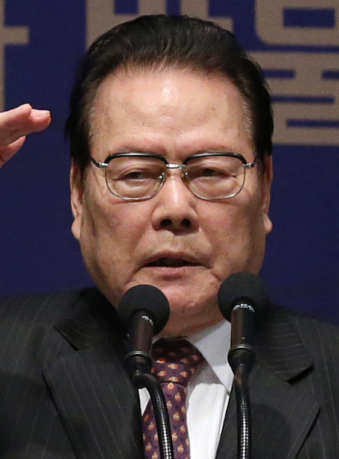

" 본다는 건 거리를 두고 할 수 있습니다. 맛본다는 건 — 내 몸 안에 들여야 할 수 있습니다. — 이어령 · 디지로그 강연 중
코흐(Christof Koch)의 Physical AI가 맞닿는 지점이 여기입니다. 클라우드 위의 LLM이 아니라 몸을 가진 AI — 냄새 맡고, 씹고, 기억을 누적하는 기계만이 언젠가 맛의 진짜 뜻에 도달할 수 있다는 것.

초대 문화부 장관, 『디지로그』 저자. 아날로그의 몸과 디지털의 머리가 만나는 지점을 일찍이 응시했습니다.